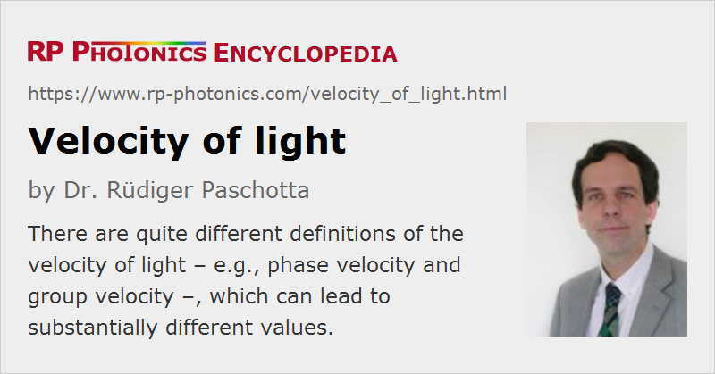

Velocity of Light
Definition: the velocity with which light propagates in a medium
More specific terms: phase velocity, group velocity, velocity of information transport
German: Lichtgeschwindigkeit
Categories: general optics, physical foundations
Units: m/s
How to cite the article; suggest additional literature
Author: Dr. Rüdiger Paschotta
Whereas the velocity of some particle is a quantity which is based on a fairly simple and unambiguous concept, the velocity of light (as of other wave phenomena) is a much more sophisticated matter. There are different kinds of velocities, which are different conceptually and can (particularly for light propagation in media) have substantially different values:
- The phase velocity is the velocity with which phase fronts propagate.
- The group velocity determines the speed with which intensity maxima propagate (e.g. the peaks of pulses).
- The velocity of information transport can differ from both phase and group velocity, see the article on causality.
Figure 1 illustrates the different velocities. In that example, the phase velocities of different frequency components vary linearly with frequency: the wavefronts of the higher-frequency components (drawn at higher positions) travel more slowly. The pulse maximum forms where the wavefronts coincide, and propagates with the (lower) group velocity. More details are given in the article on group velocity.
Further complications can arise from light propagation in inhomogeneous media, particularly in waveguides.
In vacuum, phase and group velocity (defined for plane waves) are identical at c = 299 792 458 m/s. Within the International System of Units (SI), the vacuum velocity of light has been defined to match this value exactly. Together with the definition of the second (via a hyperfine transition of cesium atoms), this determines the length of a meter.
In some situations, often associated with absorption or gain resonances, the phase velocity or even the group velocity of light can exceed the vacuum velocity of light (→ superluminal transmission, “fast light”), although this is not associated with a violation of causality. There are other situations where the group velocity of light at least within a narrow spectral region is reduced (slow light). Enormous velocity reductions can be observed for narrowband resonances, as occur e.g. in ultracold gases.
The perhaps most peculiar effect is the occurrence of negative group velocities in situations with strongly negative dn / dω.
The vacuum velocity of light plays a very important role in fundamental physics. One of the cornerstones of Einstein's theory of relativity is that the vacuum velocity of light is constant, i.e., it is the same in all inertial systems and does never depend on the propagation direction. In other words, there is not such a thing as a light aether, defining a single system where light has its “default” velocity. This seemingly innocent assumption lead Einstein to very far-reaching conclusions concerning the nature of space and time. Examples are the experimentally well confirmed phenomena of time dilatation, length contraction of moving objects, and the impossibility for any massive objects to reach or exceed the vacuum velocity of light. The central role of light in this theory indicates that electromagnetism is intimately related to the nature of spacetime, although this relation is still not entirely understood.
Questions and Comments from Users
Here you can submit questions and comments. As far as they get accepted by the author, they will appear above this paragraph together with the author’s answer. The author will decide on acceptance based on certain criteria. Essentially, the issue must be of sufficiently broad interest.
Please do not enter personal data here; we would otherwise delete it soon. (See also our privacy declaration.) If you wish to receive personal feedback or consultancy from the author, please contact him e.g. via e-mail.
By submitting the information, you give your consent to the potential publication of your inputs on our website according to our rules. (If you later retract your consent, we will delete those inputs.) As your inputs are first reviewed by the author, they may be published with some delay.
See also: wavefronts, phase velocity, group velocity, causality, superluminal transmission
and other articles in the categories general optics, physical foundations
|  |
If you like this page, please share the link with your friends and colleagues, e.g. via social media:
These sharing buttons are implemented in a privacy-friendly way!